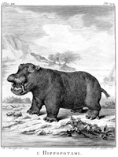

[George Louis Leclerc, comte] de Buffon, De algemeene en byzondere natuurlyke historie. Zesde deels IIde stuk. Amsterdam, by J.H. Schneider, 1781. -- (582 B 6).
Uit geen werk misschien, behalve de Encyclopédie van Diderot en d’Alembert, komt de geest van de Verlichting met het streven naar de bundeling van het menselijke kennen zo duidelijk naar voren als uit Buffons Histoire naturelle générale et particulière. Buffon (1707-1788) begon dit grootse werk in 1749 te publiceren en het vierenveertigste en laatste deel verscheen in 1804, bezorgd door Bernard Germain Etienne de La Ville, comte de Lacépède (1756-1825). Het werk kende direct, mede door de voortreffelijke stijl waarin het geschreven is, een groot succes. Het behandelt niet alleen de flora en de fauna, maar ook de mineralen. Wat het boek mede zo aantrekkelijk maakt is het feit dat Buffon een goed oog had voor de gewoonten en eigenaardigheden van de besproken dieren. Het beeld dat hij ontwierp van de schepping bracht hem niet alleen in conflict met de katholieke theologen van zijn tijd, maar deed hem later bekend zijn als een voorloper van Charles Darwin.
Getoond wordt een plaat (uit de Nederlandse vertaling, maar met behoud van het Franse onderschrift) van het ‘rivierpaard’, het nijlpaard dus.
| vorige pagina | top pagina |